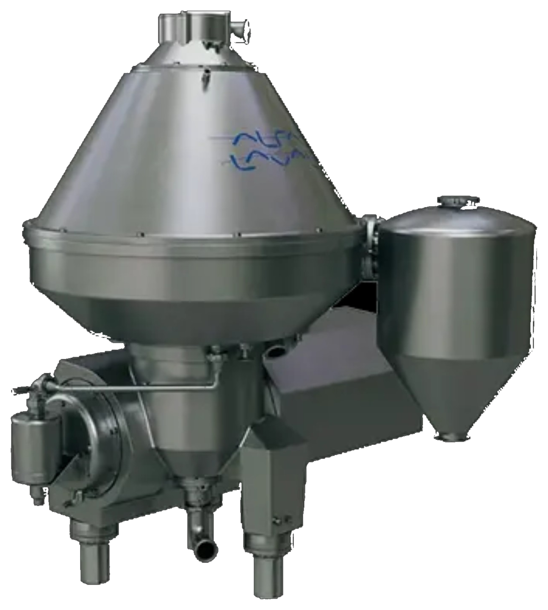
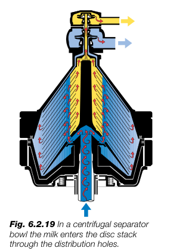
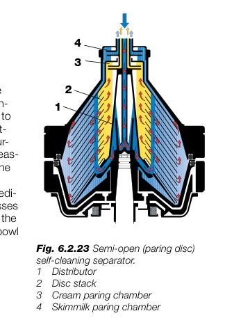
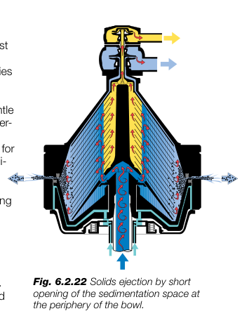
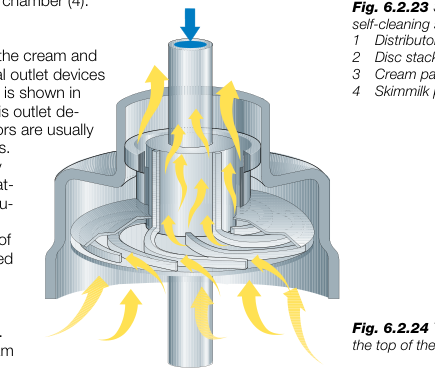
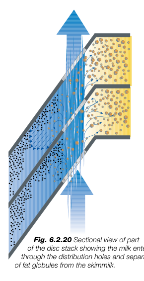
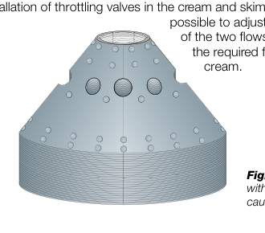

Cream Separator
A detailed dairy-engineering guide to centrifugal separation of milk into cream and skim milk — covering the disc bowl, separation path, temperature, components, outlet systems, skimming efficiency, standardization and maintenance.
Milk → Cream + Skim Milk
A cream separator is a high-speed centrifugal separator used to recover milk fat as cream while producing a low-fat skim-milk stream. The separation is based mainly on the density difference between fat globules and the continuous skim-milk phase.
Feed
Disc Bowl
Light Phase
Heavy Phase

Quick Process Reference
Warm separation reduces milk viscosity and supports fat-globule movement.
High rotational speed produces the centrifugal field.
This is the skimming ability range given in the course material.
Typical performance figure; actual plant performance depends on conditions.
01 · What is a Cream Separator?
A cream separator is a centrifugal machine designed to separate the fat phase from milk. Milk is a dispersion in which fat is present as globules in the continuous skim-milk/serum phase. Because the fat globules have lower density than skim milk, the centrifugal field drives them toward the axis of rotation, while the denser skim-milk phase moves outward.
Why centrifugal separation?
- Gravity separation is slow because the density difference is relatively small.
- High-speed rotation creates a much stronger effective acceleration.
- A disc stack provides many thin separation channels and greatly shortens the separation distance.
- Continuous outlets allow cream and skim milk to leave separately.
Where it is used
- Milk fat separation
- Milk standardization
- Cream production
- Clarification and solids removal in compatible separator designs
- Tri-process separation + clarification + standardization
02 · Working Principle — Step by Step
Milk enters the bowl and is accelerated to bowl speed before entering the separation channels.
The centrifugal field acts on every phase. Lower-density fat globules migrate inward; denser skim milk and solids migrate outward.
Cream is collected near the axis and skim milk leaves from the outer region through its outlet system.

03 · How Cream and Skim Milk Separate Between the Discs
The disc stack is the heart of the separator. Milk enters through vertically aligned distribution holes and then flows through the narrow channels formed between adjacent conical discs. These thin channels create a large effective separation area while keeping the radial travel distance small.
Why the disc stack matters: the course notes describe up to about 120 discs, with a disc inclination of 45–60° and a typical inter-disc gap around 0.5 mm. The small channel gap helps maintain suitable flow conditions; larger gaps may be needed where clogging is a concern.
04 · Main Components
Separator bowl assembly
- Bowl body: rotating lower section that forms the main separation chamber.
- Bowl hood: upper cover that closes and shapes the bowl flow path.
- Lock ring: secures the bowl body and hood.
- Distributor: receives/accelerates incoming milk and distributes it to the disc stack.
- Disc stack: multiple closely spaced conical discs where separation occurs.
- Distribution holes: aligned openings through which milk enters the disc channels.
- Sediment space: peripheral region where dense impurities accumulate.
Drive & outlet system
- Spindle: carries and rotates the bowl.
- Gear / worm drive: transmits power from the motor to the high-speed bowl spindle.
- Motor & clutch: provide and transmit drive power.
- Cream outlet: removes the light phase.
- Skim-milk outlet: removes the heavy continuous phase.
- Paring discs / outlet pumps: recover rotating liquid and convert part of its kinetic energy into discharge pressure.
- Operating-water system: used in self-cleaning/sludge-ejecting bowl designs.

05 · Open, Semi-open and Hermetic Designs
Open type
Small-capacity design operating at atmospheric pressure. The course lecture notes mention roughly 16–25 discs and up to about 1000 L/h for open-type machines. It is not normally integrated with a pasteurizer for optimum warm separation and is more exposed to air ingress.
Semi-open / Paring disc
Milk enters through a stationary axial inlet. Cream and skim milk are discharged using paring discs. The stationary paring-disc rim dips into the rotating liquid and converts rotating-liquid kinetic energy into outlet pressure.
Hermetic
The bowl is completely filled with product and the inlet/outlets are connected to piping. Milk enters through the bowl spindle, is accelerated with the bowl and passes through distribution holes. The closed design minimizes air contact.



06 · Why Around 45°C is Suitable for Separation
1. Lower viscosity
As milk temperature increases from cold conditions into the warm separation range, viscosity decreases. Lower viscosity reduces resistance to movement of fat globules through the liquid, helping them migrate through the separation channels.
2. Faster fat-globule migration
The separation time available inside the disc channels is short. A less viscous continuous phase allows the fat globules to move more readily toward the axis.
3. Better continuous processing
Warm separation fits naturally into a dairy process line where milk is already being heated before pasteurization and standardization.
4. Why not simply keep increasing temperature?
Higher temperature is not automatically better. The course material specifically cautions against separation at temperatures higher than recommended because it can shorten the life of rubber collars, packing and related components.
5. Important process distinction
Your course lecture notes also describe modern inline standardization operation in which whole milk may be heated to 55–65°C before separation. That is a different process-line description from the 40–45°C optimum cited for the open/hermetic separator discussion. Do not mix these values without considering the specific separator and process line.
07 · Skimming Efficiency / Separation Efficiency
The course material defines skimming ability mainly by the residual fat left in skim milk. A typical residual skim-milk fat level is around 0.04–0.07%; lower residual fat means better skimming.
A. Fat-recovery efficiency
For a practical calculation, use a fat balance:
Q = mass flow rate; F = fat fraction. Use the same units for all flows and express fat as a fraction or use % consistently.
B. Simplified efficiency from skim fat
This simplified form assumes that the only significant fat not recovered is the fat remaining in skim milk. For plant accounting, the full flow-and-fat balance is preferable.
Worked example
| Parameter | Value |
|---|---|
| Whole-milk flow, Qm | 10,000 kg/h |
| Whole-milk fat, Fm | 4.00% |
| Skim-milk flow, Qs | 9,000 kg/h |
| Skim-milk fat, Fs | 0.05% |
| Cream flow, Qc | 1,000 kg/h |
| Cream fat, Fc | 39.50% |
For a real plant calculation, use simultaneous measured flow and fat data from the feed, cream and skim streams and reconcile the mass balance.
08 · What Controls Separator Performance?
Lower flow reduces channel velocity and gives fat globules more time to migrate. The handbook states that skimming efficiency increases when throughput is reduced.
Very small globules have less time to migrate and are more likely to leave with skim milk. The handbook notes that globules below about 1 µm may remain in skim milk.
Warm milk has lower viscosity, supporting separation. Temperature must remain within the validated operating range.
Higher rotational speed produces a stronger centrifugal field, but the machine must be operated at its designed speed.
Number of discs, disc geometry and channel gap influence separation area, flow and capacity.
Air can reduce skimming efficiency and interfere with accurate flow/density-based standardization.
09 · Cream Flow and Fat Standardization
The fat concentration of cream is strongly related to the amount of cream discharged relative to the skim-milk flow. The handbook gives the example that whole milk containing 4% fat at 20,000 L/h contains 800 L/h of fat-equivalent flow; for 40% cream, the total cream flow required is 2,000 L/h.
10 · Outlet Systems: Paring Disc vs Hermetic
Paring-disc outlet
- The stationary rim dips into the rotating liquid column.
- Rotating liquid enters the paring-disc channels.
- Kinetic energy is converted into pressure.
- Downstream pressure therefore affects outlet performance.

Hermetic outlet
- The bowl is completely filled with milk during operation.
- Milk enters through the hollow bowl spindle and distribution holes.
- Outlet pumps discharge cream and skim milk without exposing the product to an air column.
- Hermetic design is suitable for closed process piping.

10 · Skimming Efficiency — Calculation
Skimming efficiency expresses how much of the fat entering the separator is recovered in the cream rather than leaving with the skim milk.
Worked example
Milk flow = 10,000 L/h; milk fat = 4%; skim-milk flow = 9,000 L/h; skim fat = 0.05%.
Fat in skim = 9,000 × 0.05 / 100 = 4.5
Fat recovered = 400 − 4.5 = 395.5
η = (395.5 / 400) × 100 = 98.88%
Interpretation
- Lower residual fat in skim milk generally indicates better separation.
- Typical residual skim-milk fat is about 0.04–0.07%.
- Actual performance depends on bowl design, throughput, fat-globule size, temperature, air content and operating condition.
11 · Solids Removal & Self-cleaning Bowl
Besides fat separation, dense impurities move toward the bowl periphery and accumulate in the sediment space. Modern self-cleaning/solids-ejecting bowls can discharge accumulated sediment automatically rather than requiring frequent manual dismantling.
Straw, hairs, udder cells, white and red blood cells, bacteria and other dense impurities can collect in the sediment space.
A hydraulic operating-water system controls the sliding bowl bottom. A short opening of the discharge space releases accumulated solids, after which the bowl is closed again.
12 · Maintenance & Safety
- Replace rubber gaskets and O-rings before excessive wear.
- Maintain the correct lubrication-oil quality and level.
- Inspect spindle and drive bearings; worn bearings can contribute to shaft problems, reduced efficiency and reduced capacity.
- Clean discs using suitable soft cleaning material; avoid damaging the disc surfaces.
- Store discs correctly to prevent deformation or damage.
- Assemble the bowl and disc stack correctly to avoid vibration and loss of capacity.
- Never run the separator dry without fluid.
- Never assemble, disassemble or adjust a rotating separator.
- Verify correct spindle direction after motor maintenance.
- Feed milk at the pressure recommended for the separator.
- Do not allow process piping loads to strain the separator connections.
- Do not operate at unnecessarily high temperature; the course material warns that excessive temperature can reduce the service life of rubber collars and packing.
13 · Visual Reference Gallery



14 · Exam / Viva Quick Notes
- Principle: centrifugal separation based on density difference.
- Cream: lower-density phase; moves toward the axis.
- Skim milk: higher-density continuous phase; moves outward.
- Disc stack: creates many narrow separation channels.
- Typical bowl speed: 5,500–6,000 rpm in the course notes.
- Skimming ability: residual skim fat about 0.04–0.07% in the course notes.
- Temperature: 40–45°C cited as optimum in course material.
- Types: open, semi-open/paring-disc and hermetic.
- Modern use: separation, clarification and standardization can be combined in tri-process separators.
- Best performance: correct temperature, flow, bowl speed, disc condition and low air entrainment.